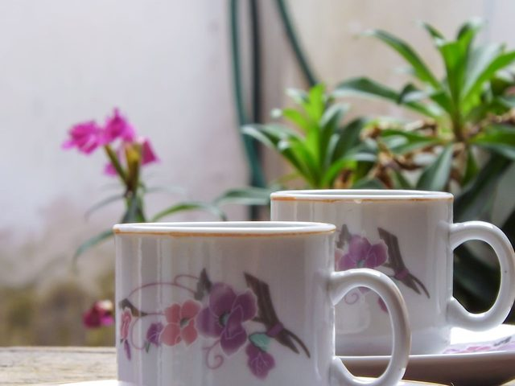
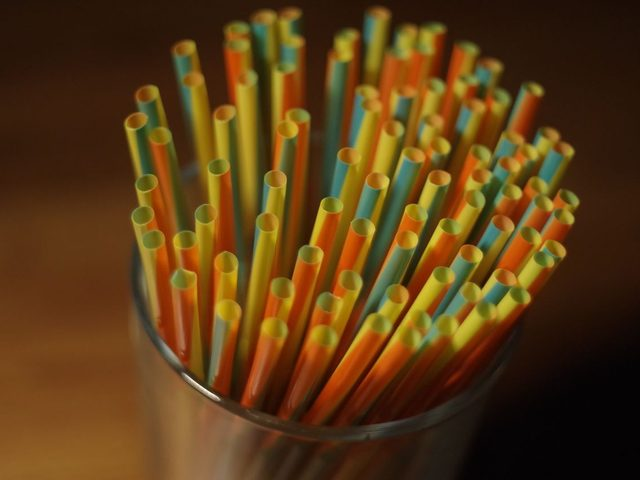

VOCABULARY · 主題 2000 字 PART 2 UNIT 11
Tableware．餐具
吃飯、喝飲料會用到的 3 樣小東西：餐巾、小碟子、吸管。
共 3 個單字．點 🔊 聽發音

1napkinn.
餐巾；餐巾紙
paper napkin 紙巾
Use a napkin to wipe your mouth.用餐巾擦嘴巴。

2saucern.
茶碟；小碟子
cup and saucer 杯子和杯盤；flying saucer 飛碟
She put the cup on the saucer.她把杯子放在杯盤上。

3strawn.
吸管；稻草
a paper straw 紙吸管
Bubble tea needs a big straw.珍珠奶茶要用粗吸管。